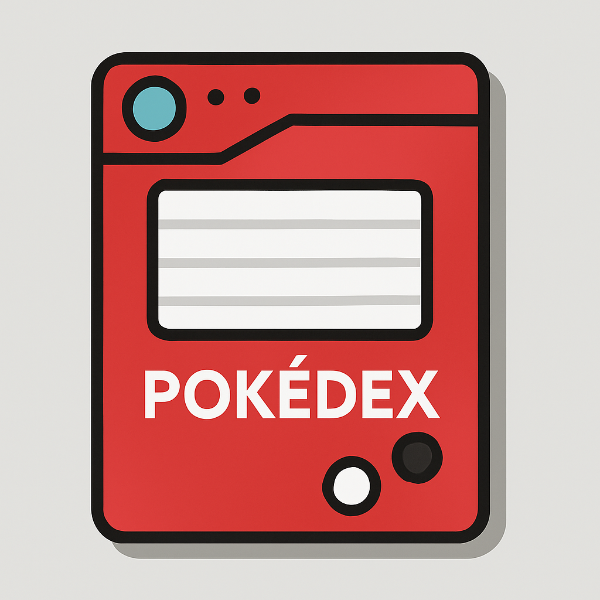

Meine Projekte

Taschenrechner mit JS
Ein mit HTML, CSS und JavaScript programmierter Taschenrechner, mit Basisfunktionen
Java Script • HTML • CSS

Speech to Text Skript
Ein Bash Skript wandelt via whisper.cpp Sprache in Text um.Auf Wunsch wird Ausgabe in einer Textdatei gespeichert.
Bash • whisper.cpp • ffmpeg

PokeDB
Ein "Pokedex", mit Python GUI und einer SQL Datenbank anbindung. Zeigt Pokemonnamen, Sprites und Text uvm.
Python • MariaDB / XAMPP